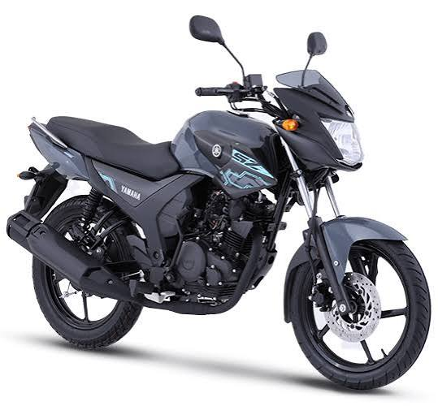
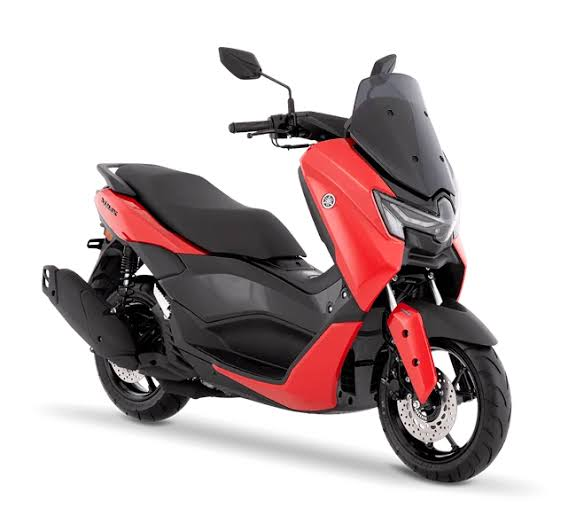
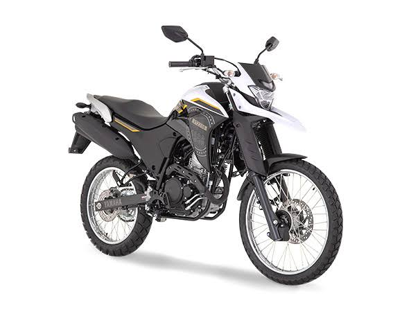
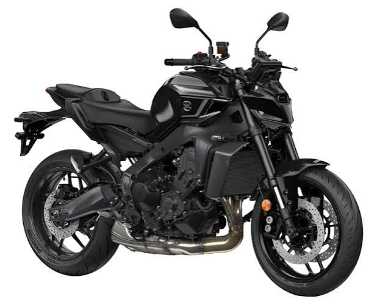

Yamaha Motor Co., Ltd. es un fabricante japones enfocado fundamentalmente en el diseño y producción de medios de transporte y soluciones de movilidad. Aunque su fama internacional proviene de sus motos, su catálogo también abarca scooters, cuatrimotos, propulsores marinos, lanchas, robótica industrial y diversos artículos adicionales.
La Yamaha SZR 150 es una motocicleta urbana diseñada para ofrecer practicidad, economía y facilidad de conducción. Equipada con un motor monocilíndrico de aproximadamente 150 cc, se caracteriza por su construcción sencilla y su bajo peso. Gracias a su configuración, se convirtió en una alternativa popular para quienes buscaban una motocicleta confiable para el transporte diario.

La Yamaha FZ 250 es una motocicleta de estilo street/naked orientada principalmente al uso urbano y a recorridos por carretera. Su propuesta busca combinar un motor de 250 cc con un diseño deportivo, comodidad para el uso diario y un consumo razonable.
La Yamaha NMAX 155 es un scooter que combina practicidad, tecnología y rendimiento en un diseño moderno. Su motor de 155 cc y su transmisión automática permiten una conducción cómoda y sencilla, especialmente en entornos urbanos. Además, cuenta con características como ABS de doble canal, iluminación LED, Smart Key y amplio espacio de almacenamiento, convirtiéndola en una alternativa atractiva para quienes buscan comodidad sin renunciar al rendimiento.

La Yamaha XTZ 250 es una motocicleta de doble propósito diseñada para quienes buscan combinar movilidad urbana y aventura. Su motor de 249 cc ofrece un equilibrio entre rendimiento y versatilidad, mientras que su configuración todoterreno permite enfrentarse a caminos de tierra y terrenos irregulares. Su elevada distancia al suelo, sus ruedas de 21 y 18 pulgadas y su sistema de suspensión la convierten en una opción pensada para explorar diferentes tipos de caminos.

La Yamaha MT-09 es una motocicleta naked de alto rendimiento que combina diseño agresivo, tecnología y potencia. Su motor de tres cilindros y 890 cc ofrece una respuesta contundente, mientras que su chasis y configuración están pensados para proporcionar una conducción ágil y divertida. La MT-09 forma parte de la familia MT de Yamaha, conocida por sus motocicletas de estilo deportivo y carácter agresivo.
